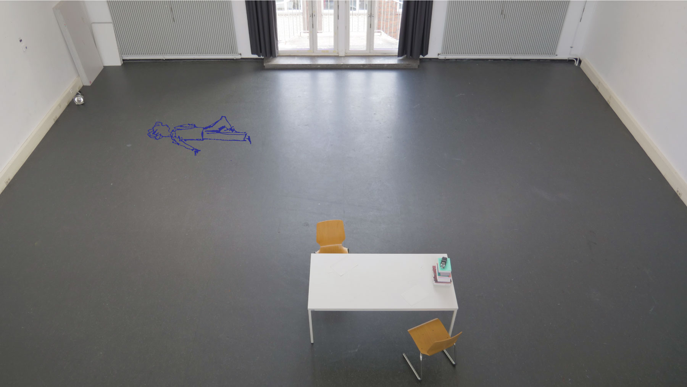

With the participants coming for their sessions, I had to think of a way to capture those moments. And ideally in an interesting way. At the very first meeting, I had an audio recorder laying on the table, but I never dared to ask if it was okay to record …